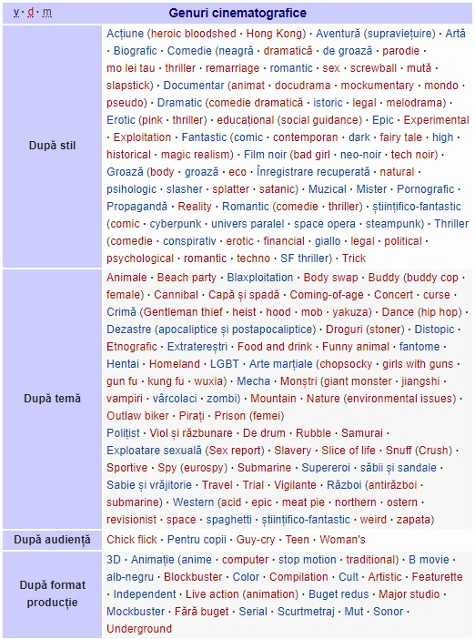

Sunt filme destinate proiecției cinematografice pentru ceea ce numim "marele ecran". Producerea lor constituie un proces laborios, cu teme care să cuprindă exterioare de mare anvergură, cu planuri îndepărtate bine dinstincte, peisaje etc. Trebuie evidențiat faptul că ele sunt făcute deseori pentru sistemul cu ecran lat.
Sunt filme concepute pentru a fi prezentate pe „micul ecran”. Particularitățile reproducerii pe ecranul televizorului impun un limbaj cinematografic specific: simplitatea compoziției cadrului și planurilor medii, iluminarea cu un contrast mai scăzut. Aceste filme sunt de obicei seriale de un anumit timp, prezentate periodic, fapt care impune o producție mai rapidă și folosirea mai multor camere de filmare. De asemenea, se folosesc decoruri cu caracter permanent sau ușor de asamblat. Nu se folosesc planuri îndepărtate, mergându-se pe planuri apropiate, chiar pe detaliu de față. Un exemplu tipic este serialul de televiziune american „Tânăr și neliniștit” sau cel românesc, „Secretul Mariei”.
Filmul mut a fost folosit la începuturile cinematografului, când posibilitățile tehnice nu permiteau înregistrarea sunetului sincron pe peliculă (o metodă tehnică de a adăuga un canal de sunet imaginei proiectate nu fusese încă inventată), cu toate că încercări spectaculoase au fost făcute la începutul secolului XX. Numai la finele anilor douăzeci, mai precis în anul 1927, s-a reușit sincronizarea sunetului cu imaginea redată, odată cu apariția producției americane „Cântărețul de jazz”.
Totuși, și astăzi se apelează la tehnica filmului mut (eventual coroborată cu jocul specific, imagine alb-negru sau sepia, muzică după modele începutului de secol, folosirea de inserturi pentru ceea ce se vorbește), fie în căutarea unor efecte similare în rândul spectatorilor, fie pentru a omagia (sau ridiculiza) cinematograful de începuturi.
Este producția de film unde redarea sunetului se face pe un singur canal. Spectatorul înregistrează sunetul venit dintr-un singur loc, anume acolo unde este așezat difuzorul (nu neapărat de unde se află ecranul de proiecție). Pentru ameliorarea acestui efect negativ se recomandă folosirea ecranelor transonore, iar în spatele lor să fie așezate liniar cât mai multe difuzoare.
Este producția de film realizată prin procedee speciale de înregistrare a sunetului pe mai multe piste în vederea redării efectului de stereofonie.
Este producția de film realizată prin procedee speciale atât de filmare cât și de proiecție, care să asigure redarea în proiecție a celei de-a treia dimensiuni a obiectelor. Se creează senzația de volum, folosindu-se tehnica vederii binoculară. (Ea stă și la baza fenomenului prin care putem aprecia distanțele; distanța dintre cei doi ochi determină compunerea imaginii din două unghiuri diferite; creierul procesează diferențele dintre ele și poate astfel aproxima distanțele.) Tot așa, în filmul stereoscopic, fiecărui ochi îi este destinată o imagine diferită. Vizionarea se face cu niște ochelari cu sticle polarizate sau stereoprisme, individual pentru fiecare spectator. Vizionare se mai poate face și colectiv, când dispozitivul asigură separarea la nivelul tuturor spectatorilor. Complexitatea se transferă ecranului. Se pot folosi ecrane de tipul stereoraster paralel, stereoraster rotativ și stereoraster lenticular. In rețeaua din România s-a folosit numai sistemul cu ochelari cu sticle polarizate.
Sunt filmele care depășesc lungimea de 1900 metri sau 70 minute de proiecție. În general durata unui film de lung metraj este între 2400 m și 2900 m la formatul normal de 35 mm, deci unei durate de 1 1/2 la 1 3/4 ore, caracteristică filmelor de ficțiune.
Sunt filme cu o lungime de până la 600 m, cu durată de până la 20 minute. Este metrajul multor filme artistice (numite deseori, într-un cuvânt, „scurt-metraje”), al filmelor documentare, de reportaje și de animație.
